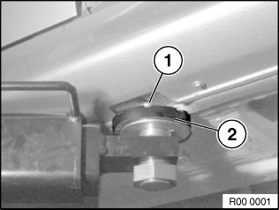

Vehicle Damage Warnings
00 .. ... Lifting Vehicle With A Lifting Platform

WARNING:
Danger to life.
Read and follow operating instructions for lifting platform.
Do not exceed carrying capacity of lifting platform.
NOTE: The lifting platform must comply with the relevant statutory accident prevention regulations and be serviced according to the manufacturer's instructions.

IMPORTANT:
Risk of damage.
Before driving onto a lifting platform, make sure there is sufficient ground clearance between the lifting platform and the car.
The vehicle may only be raised with the lifting platform at the four jacking points.

IMPORTANT:
Risk of damage.
Align support plates (2) of lifting platform arms to jacking points (1) in such a way that no adjoining components are touched and thereby damaged.